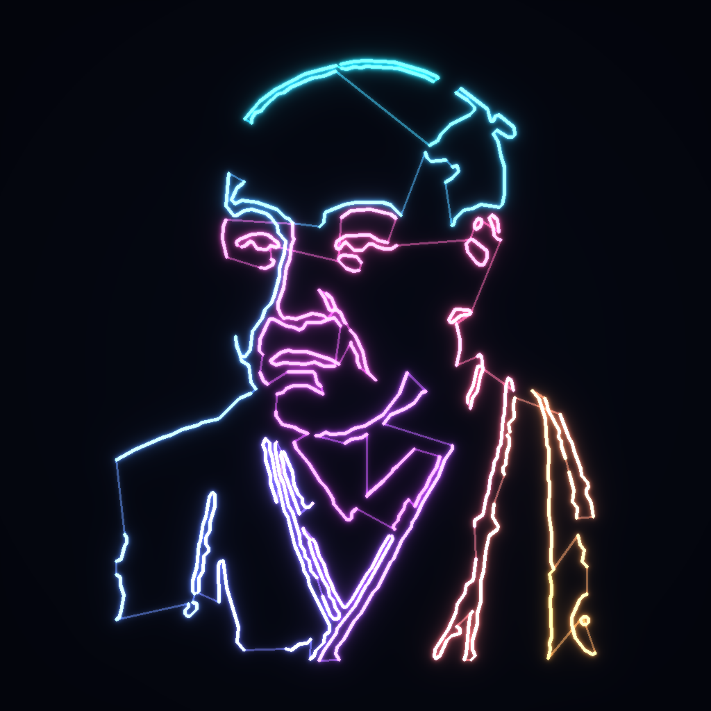
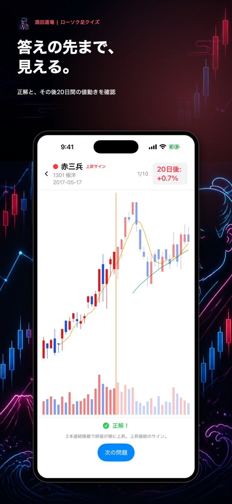
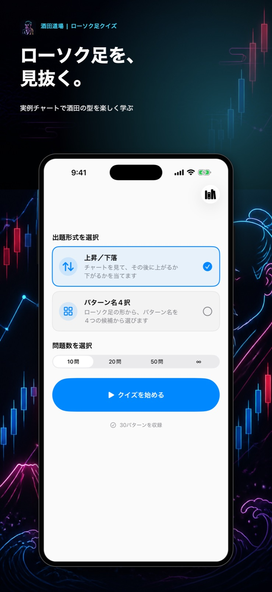
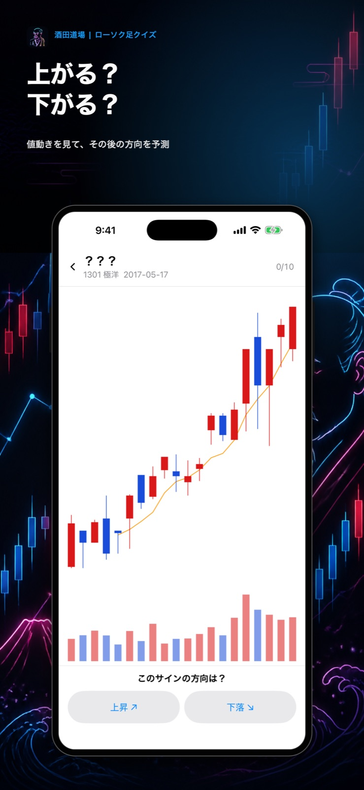
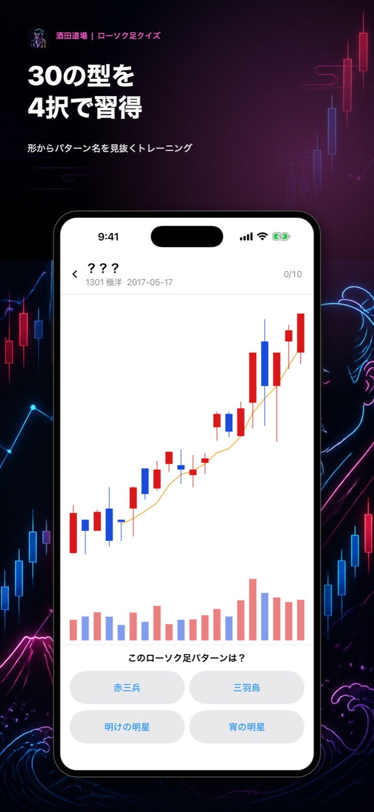
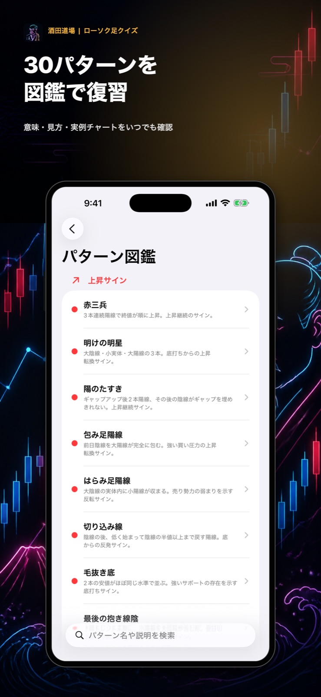

上昇／下落クイズ
パターン名を伏せた実例チャートを見て、その後に上がるか下がるかを二択で予測します。

Candlestick quiz & pattern guide
過去の実例チャートを読み、値動きの方向やローソク足パターンを当てながら学ぶ。クイズと図鑑をひとつにした、酒田の型のトレーニングアプリです。

FEATURES
形だけを暗記するのではなく、実際のチャートと成立後の値動きを行き来しながら学べます。
パターン名を伏せた実例チャートを見て、その後に上がるか下がるかを二択で予測します。
ローソク足の並びから、赤三兵・三羽烏・明けの明星などのパターン名を選びます。
答え合わせでは、パターン成立後のローソク足を薄色で表示。正解だけで終わらず、その先まで振り返れます。
上昇サインと下落サインに分けて、意味・見方・複数の実例チャートをいつでも復習できます。
LEARNING FLOW
方向クイズかパターン名4択を選択。
ローソク足・移動平均線・出来高を確認。
上昇／下落、または4つの型から回答。
解説と成立後の値動きまで振り返る。
SCREENSHOTS
iPhoneでは片手で問題に集中でき、iPadではチャートをより大きく確認できます。




本アプリはローソク足パターンの学習を目的としたもので、特定銘柄の売買や投資判断を推奨するものではありません。掲載する実例は過去のデータであり、将来の値動きを保証しません。
ご意見・ご要望、不具合のご報告を受け付けています。
TwitterのDMで問い合わせる個人を特定できる情報は収集しません。詳しい取り扱いは共通ポリシーをご覧ください。
プライバシーポリシーを読む